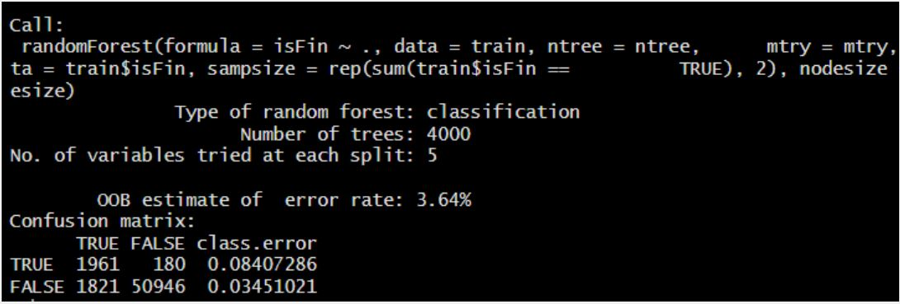
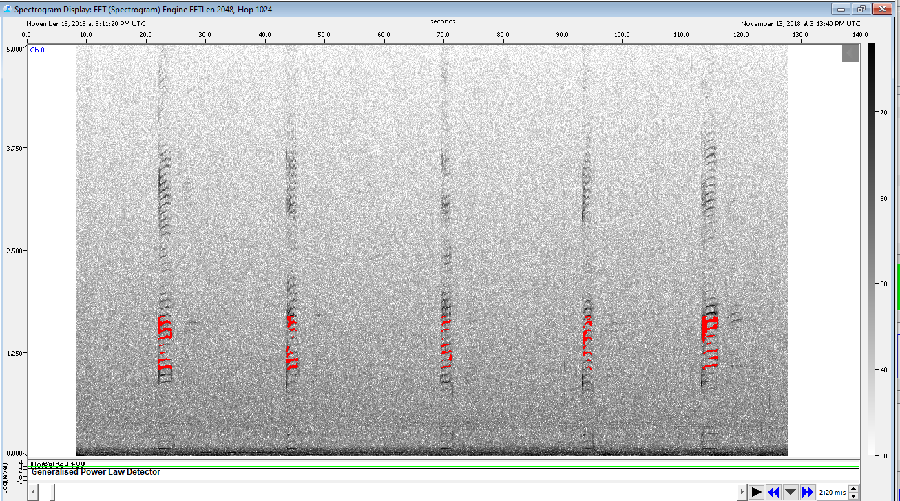

Overview
Summary
Baleen whale vocalizations are noted by their long duration, low frequency calls. While we wanted to come up with one approach to detect and classify all baleen whale species in the California Current, existing open source software did not provide the best platform to do so. Here we summarize multiple methods on how we tackled the problem of detecting and classifying baleen whales in the the ADRIFT recordings.
Data Prep
Recordings from ADRIFT, CCES, and PASCAL were originally sampled between 192kHz and 576kHz. In order to examine these recordings for baleen whales they were decimated in Triton software to 12kHz and 500Hz respectively using channel one of the raw recordings.
From those decimated recordings, Triton software was used to create long-term spectral averages (LTSAs) for each Drift at both 12kHz and 500Hz respectively.
- LTSAs were reviewed by an experienced analyst as an initial QAQC of our recordings in that frequency range. If it was determined that the recordings were unusable in a specific frequency then that was noted in the Deployment Details.
Blue Whales
Manual Annotation in Triton
Presence of blue whales within the recordings were based off of A, B, and D call types.
Triton software was used for the following:
Long-term spectral averages (LTSAs) were calculated with a 1 Hz, 5 second resolution using 500Hz decimated recordings
A trained analyst scanned the LTSAs one hour at a time to look for A, B and D calls. If a call was discovered within that hour chunk, the analyst would note the start time of each call type and a comment regarding the SNR and quality of the call before moving onto the next hour.
These annotations were saved in a .CSV for each deployment. CSVs were then combined and plots for hourly presence were created.
Click here for more detail of these methods.
Fin 20Hz CCES & PASCAL
Manual Annotation in Triton
Presence of 20Hz fin whale calls within the recordings were manually annotated due to the variability in recording duty cycle and sampling.
Triton software was used for the following:
Long-term spectral averages (LTSAs) were calculated with a 1 Hz, 5 second resolution using 500Hz decimated recordings
A trained analyst scanned the LTSAs one hour at a time to look for A, B and D calls. If a call was discovered within that hour chunk, the analyst would note the start time of each call type and a comment regarding the SNR and quality of the call before moving onto the next hour.
These annotations were saved in a .CSV for each deployment. CSVs were then combined and plots for hourly presence were created.
Click here for more detail of these methods.
Fin 20 Hz ADRIFT
Click detector in PAMGuard
- PAMGuard software was used to automatically detect fin whale 20Hz pulses in the ADRIFT data set.
A click classifier was created to classify 20Hz fin whale pulses as “fin clicks”
- PamGuard settings can be found here
Recordings from each Drift were run through the click detector
Click information were saved to binary files
Validation of events
PAMpal was used to create fin whale events in each database
Events were defined as every wav file
- Wav file lengths and duty cycles varied depending on deployment but all information related to deployment details can be found here.
A stratified sub-sampling method was used to validate 20% of the wav files in a drift.
Random Forest Model
- A random forest model was created using validated data from 14 drifts, deployed in 3 different locations between June of 2021-July 2023.
Review of Model Results

We used the model to predict if fin whales were present on an hourly basis. While we understand that there were limitations to this model, we felt confident using based off of the following criteria.
The model had one of three results: Accepted, Review, Dropped
Accepted: 3 or more predictions and a score of 0.85 or higher
Review: 3 or more predictions and a score of 0.5 to 0.84
Dropped: less than 3 predictions and a score of greater than 0.5
Both Accepted and Review detections were reviewed for accuracy
More details of these methods can be found here
Fin 40 Hz ADRIFT/ Brydes/Sei
Stage 1: PAMGuard Automated Processing
Raw audio (.wav) files were organized and processed by drifter in PAMGuard’s “Whistle and Moan” detector.
- Example PAMGuard settings file: ‘Fin40Hz_Drifter_Analysis_200Hz_v2.psfx’
Automated detections were clipped and stored in a clip folder in order to allow for review using the clip generator
These were housed outside of the binary to maintain lower binary file size for later processing/copying of data
An LTSA module was added to all configuration files to assist with rapid identification of noise and marine mammal vocal activity periods, but largely only leveraged with continuous data
Stage 2: PAMGuard Viewer Mode Review and Annotation
In PAMGuard Viewer Mode, an experienced data analyst used the ‘Detection Group Localiser’ to mark the start and end of each acoustic event (defined by a minimum elapsed time between the end of a series of continuous calls and beginning of another, e.g. 120 minutes)
A custom logger form was used to collect the analyst initials, species, call type and comments regarding the acoustic event
If an analyst was not confident in a species identification, an association of “Possible” and the whale name was indicated.
If the calls were not possible to identify to species, a label of “Unknown whale” (if thought to be a whale) or “Unknown sound” (if unsure if it was a whale or fish) was used
More detailed methods can be found here
Gray and Humpback
Downsampled audio data (12 kHz) were visualized as spectrograms and manually browsed for the presence of humpback and gray whale calls using Raven Pro v. 1.6.4. Spectrogram settings included a 4096pt fft length with a Han window 90% overlap resulting in a 341 ms time and 4.21hz frequency resolution. All drifts were manually scanned for humpback and gray whale calls and hourly presence was indicated, regardless of duty-cycling regime.
All annotation files were stored as Raven Selection tables containing columns for the start and end time, relative to the beginning of the drift audio files, date and time at the start of the annotation in yyyy/mm/dd HH:MM:SS, low and high frequency, Species, Hour of the day-for hourly presence analysis, and additional Notes column.
Humpback Whale Annotations
Humpback annotations were labeled as either humpback song, (HmpSng), humpback social (HmpSoc), or undetermined humpback calls (Hmp).
The humpback song category contained sections of calls where at least two notes of a theme were clearly visible and produced twice
- This qualification was relaxed when song segments were clearly visible in the preceding hour and were reduced in SNR or masked by impulsive sounds (i.e. increasing distance between the animal and drifter)
The humpback social category included whops and grunt sequences, that are stereotyped and could be clearly discriminated (Dundop et al. 2008)
The undetermined humpback category was a catch all for calls that did not clearly fit into either song or social category
- This was often used when calls were low SNR or diverse in visual and aural appearance
During the annotation process at least one call of each class was noted for each hour where present. However, multiple annotations were per hour were occasionally made where subjectively higher SNR signals were found after the initial annotation. In other words, some effort was made to select the highest SNR calls
Gray Whale Annotation
The presence of gray whales was also indicated but classes were not specified. However, it should be noted that there is considerable overlap in the repertoires of humpback whales and gray whales and as such, care should be taken when inferring gray whale presence from audio with concurrent humpback whale presence.
Cross Validation
Cross validation of a portion of the calls was completed with Dr. Alison Stimpert. In this process, a selection of uncertain annotations were collaboratively reviewed to ensure consistency between expert analysts.
Minke
- PAMGuard software was used to run a Generalized Power Law (GPL) detector to identify Minke whale boings (see image below)
- All detections were manually scanned and all boings were annotated using PAMGuard Viewer Mode’s Spectrogram Annotation Tool
- Following manual scanning, an additional 20% of the total data was subsampled to look for false negative boings
- The annotations were then summarized into hourly presence/absence tables.

Click here for more detailed methods